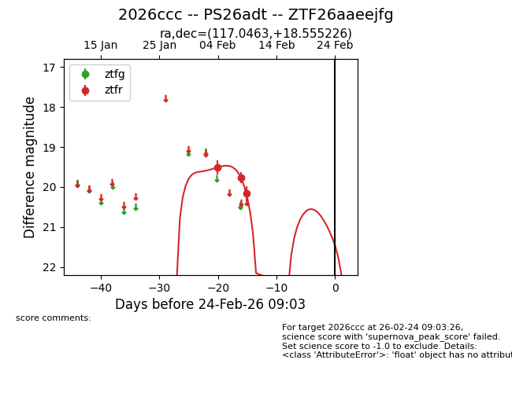
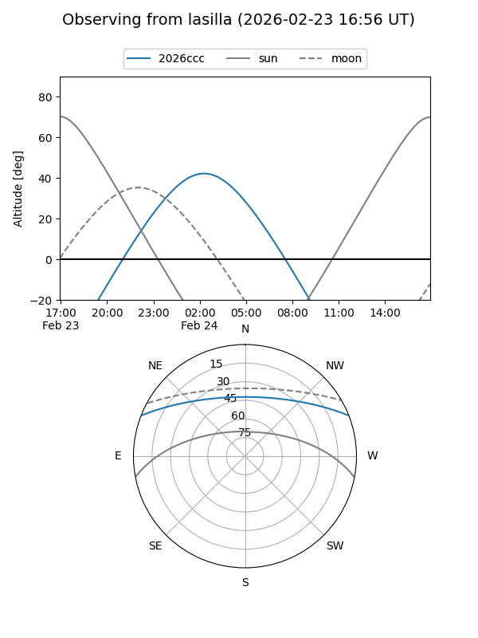
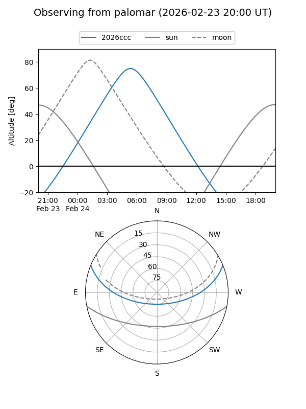
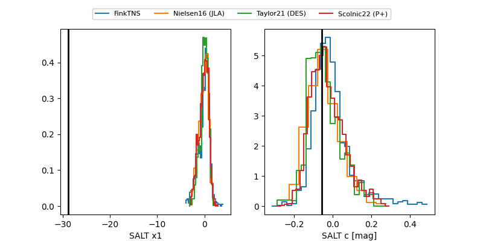

2026ccc
Target 2026ccc at 2026-02-24 09:08
Aliases and brokers:
FINK: link
Lasair: link
ALeRCE: link
TNS: link
YSE: link
alt names
ZTF26aaeejfg (ztf,fink_ztf)
2026ccc (tns,yse)
PS26adt (panstarrs)
Coordinates:
equatorial (ra, dec) = 117.0463,+18.55523
equatorial (HMS+DMS) = 07:48:11.12,+18:33:18.81
galactic (l, b) = (202.0155,+20.60275)
Flags:
Photometry:
last ztfr=20.17
3 ztfr detections
Lightcurve

Visibility


Additional plots
